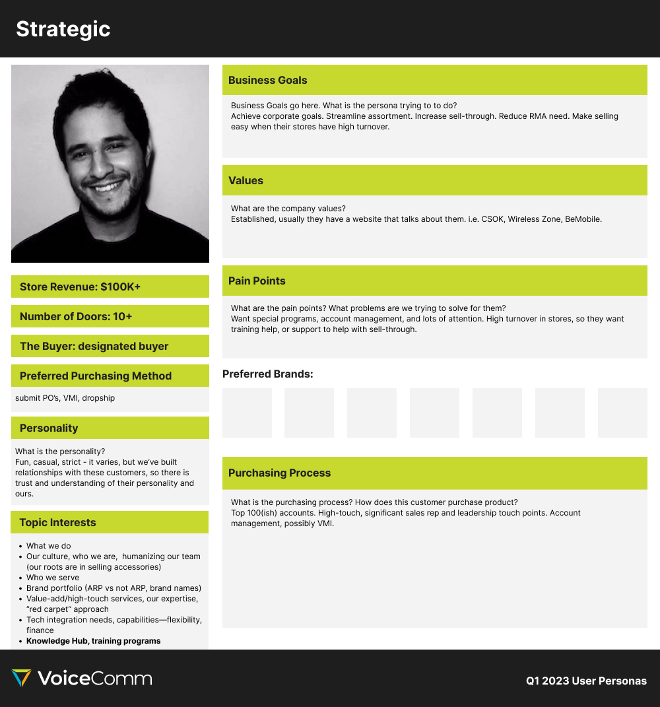
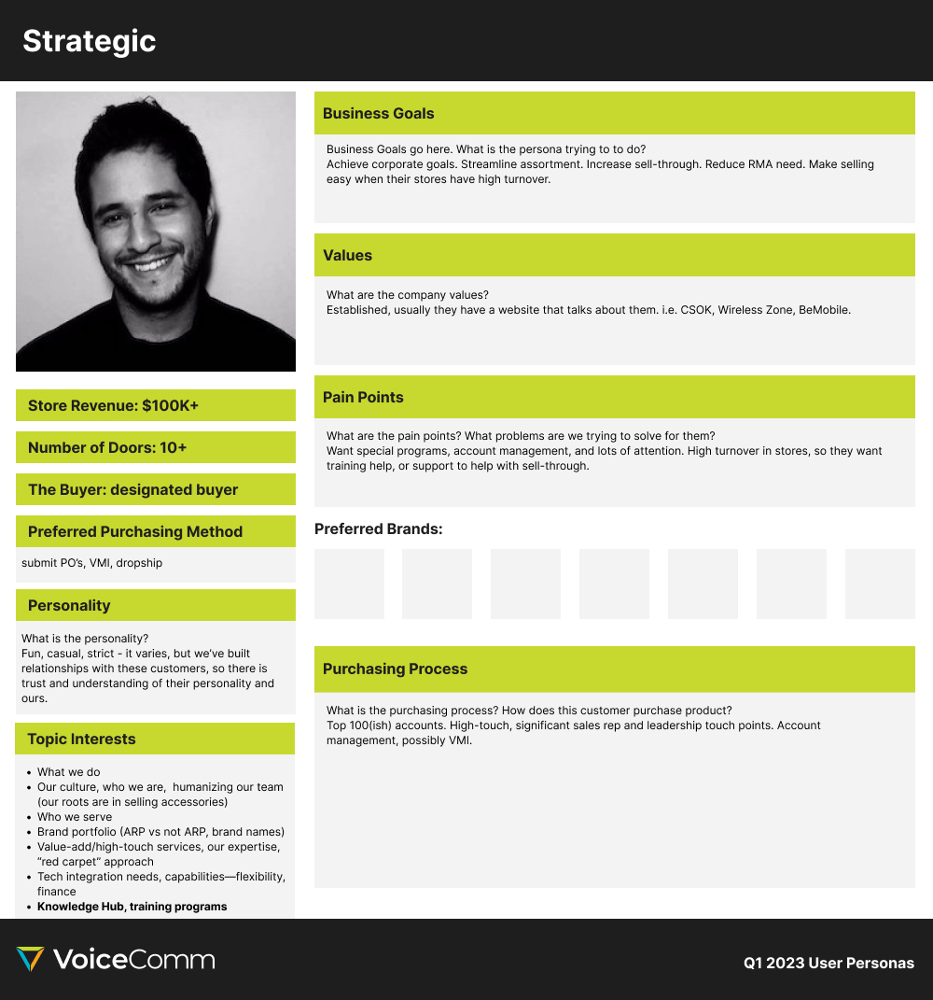
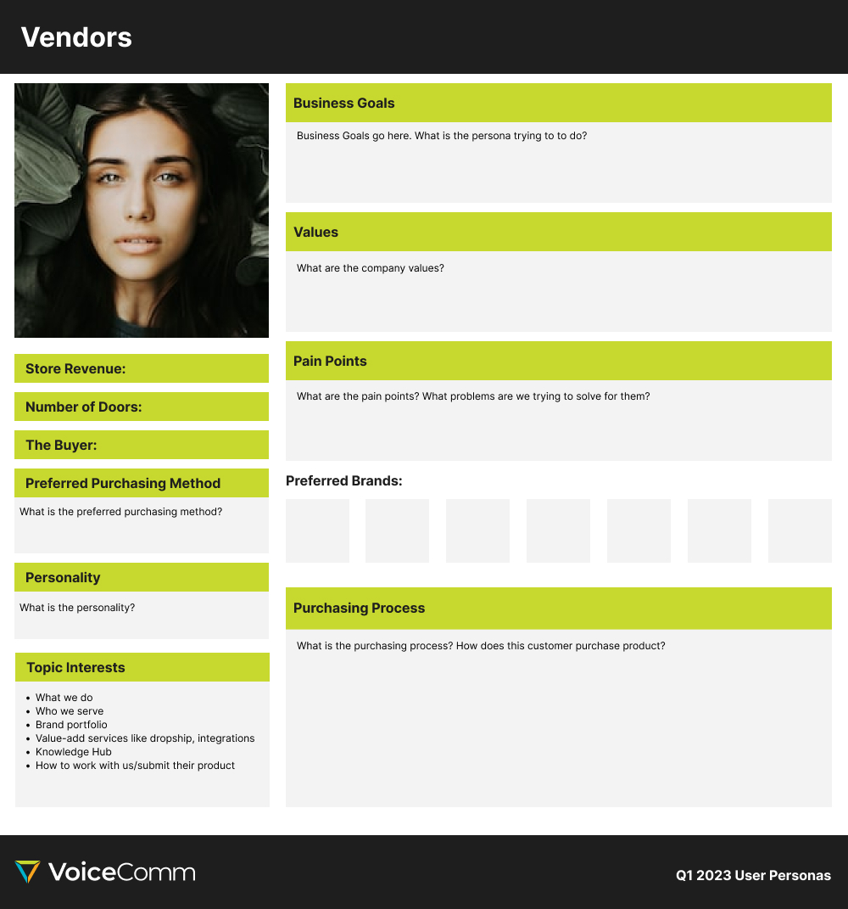
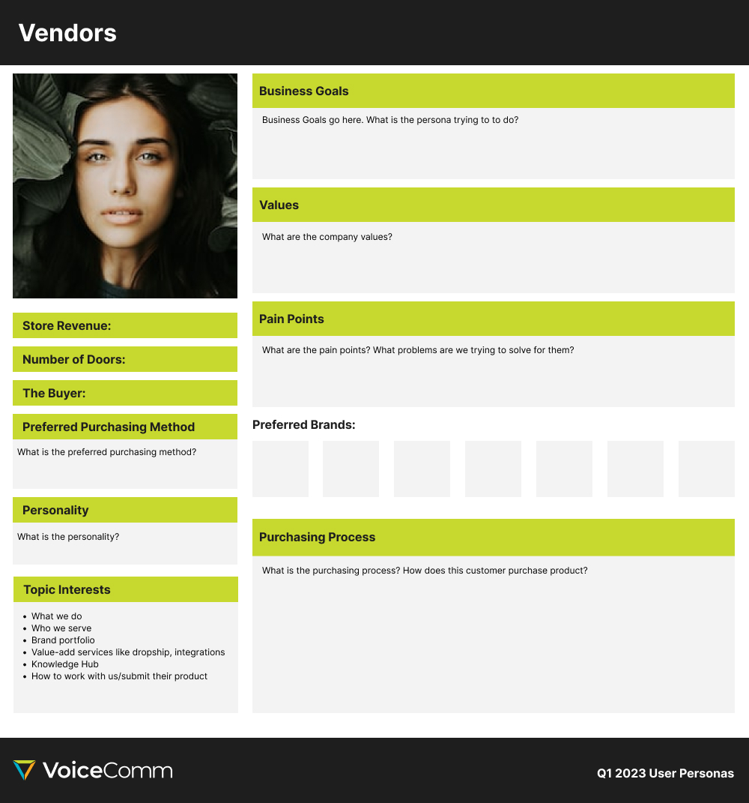
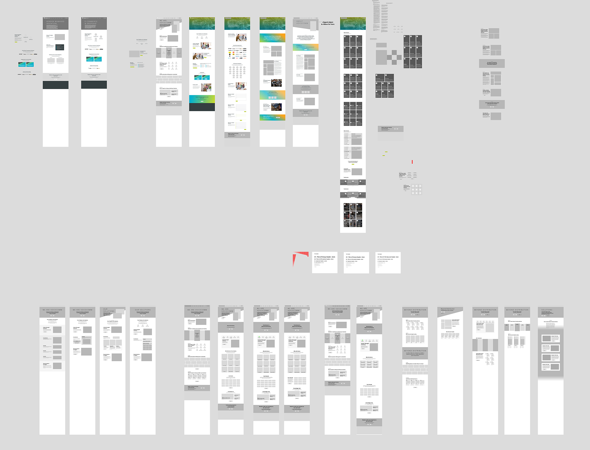
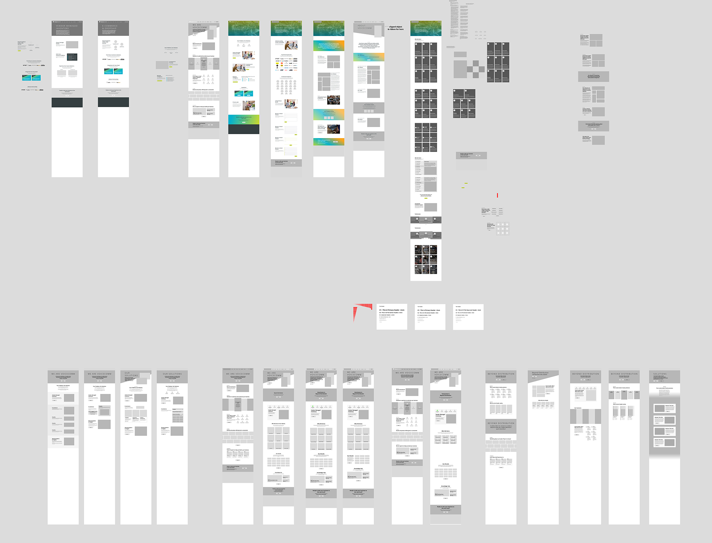

Project Intro
VoiceComm's existing website, originally designed in 2016, has become outdated in light of the significant growth and transformative changes the company has undergone since then. Recognizing the need to align the digital presence with these advancements, the board of directors initiated a comprehensive website overhaul.
This initiative aimed not only to refresh the website's appearance but also to effectively capture and communicate the organizational evolution and expansion. Concurrently, an opportunity was seized to segregate the e-commerce and brochure segments of the website. This strategic division yielded a host of advantages, including enhanced Search Engine Optimization (SEO) capabilities for both sections. Moreover, the migration from a custom-built platform devoid of a Content Management System (CMS) to HubSpot was undertaken, leveraging the latter's robust CMS functionalities.
The directive to orchestrate this redesign was entrusted to the Creative Department, with the mantle of leadership falling upon my role as the in-house digital designer. This undertaking encompassed a multifaceted array of responsibilities, spanning the orchestration and delineation of the design and development workflow, the facilitation of workshops aimed at content generation in collaboration with leadership and colleagues, and the principal design architectonics for the new website.


 

 

 
